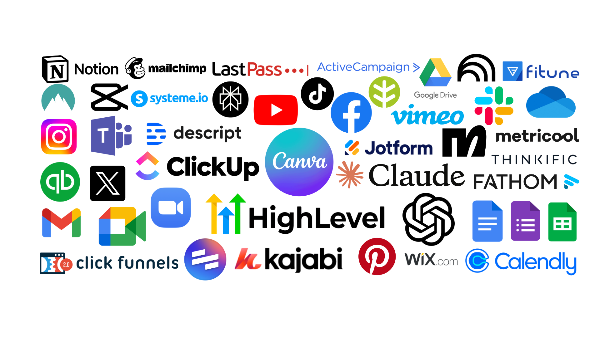

Multi-Skilled and AI-Powered Virtual Assistant for Smarter Business Support
GHL Expert | SMM | Bookkeeper
About
Hi, I'm Jonna. I'm a multi-skilled and versatile Virtual Assistant for growing businesses, with experience in digital marketing, social media management, lead generation, admin support, bookkeeping, and auditing. What sets me apart? I work smarter with AI, using the latest tools to automate tasks, speed up workflows, and deliver results faster. Whether it's keeping your operations organized or tackling projects with precision, I bring a strong can-do attitude and a tech-forward edge to everything I do.
View My Work ↗
Video Intro
Tools

Expertises
CV
Download ↗Testimonials
"Jonna's attention to detail has been a game-changer for my business. I highly recommend her!"
"The social media management Jonna provided was exceptional. We saw a noticeable increase in engagement."
"A versatile virtual assistant who stays on top of every deadline. Jonna is truly talented."
"Jonna's attention to detail has been a game-changer for my business. I highly recommend her!"
01. GoHighLevel (GHL) Management
Setting up and managing GHL accounts end-to-end, from building high-converting funnels and automating workflows to auditing and testing everything before going live, managing CRM pipelines and running email/SMS campaigns.
02. Digital Marketing
Planning and executing data-driven marketing strategies that grow online presence, attract the right audience, and turn leads into customers.
03. Website & Funnel Creation
Building clean, high-converting websites and sales funnels designed to capture attention, nurture leads, and drive meaningful action.
04. Social Media Management
Handling social media presence from content planning and scheduling to engagement and analytics, keeping brands consistent, active, and visible.
05. Lead Generation
Identifying and qualifying potential clients through targeted research and outreach strategies that keep pipelines full and businesses growing.
06. Graphic Design
Creating eye-catching visuals, from social media graphics and brand materials to marketing assets that communicate a brand clearly and professionally.
07. Bookkeeping
Keeping financial records accurate, organized, and up to date so there's always a clear picture of how a business is performing.
08. Auditing
Reviewing and analyzing business operations and processes to spot inefficiencies, identify gaps, and provide actionable insights that keep things running smoothly and at full potential.